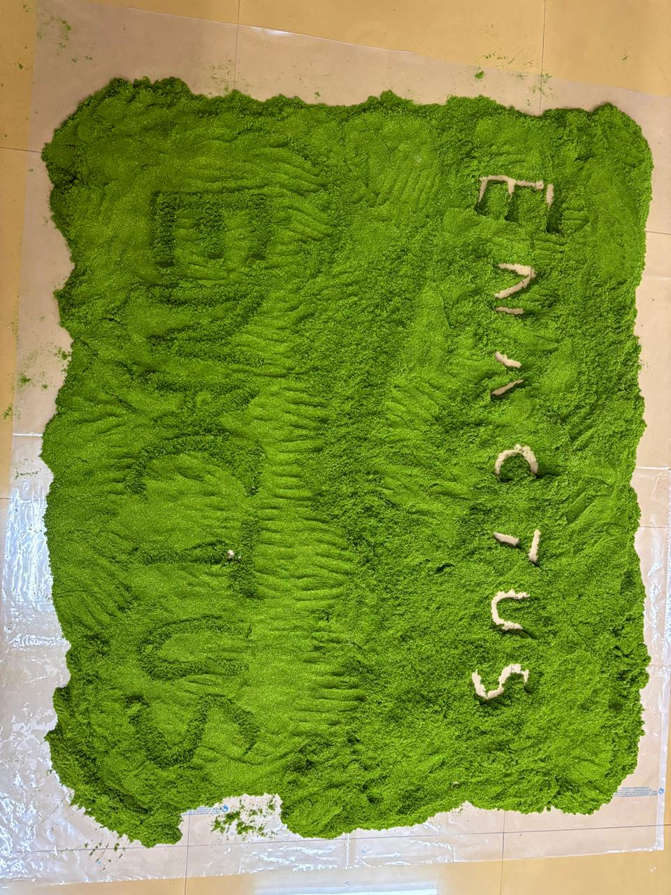
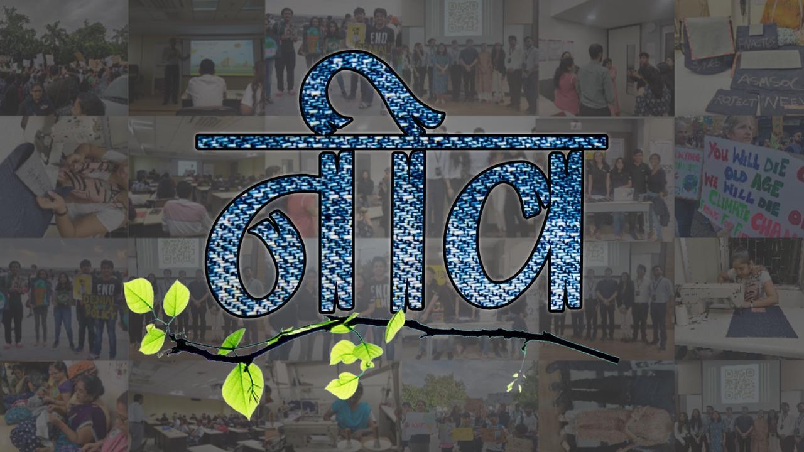
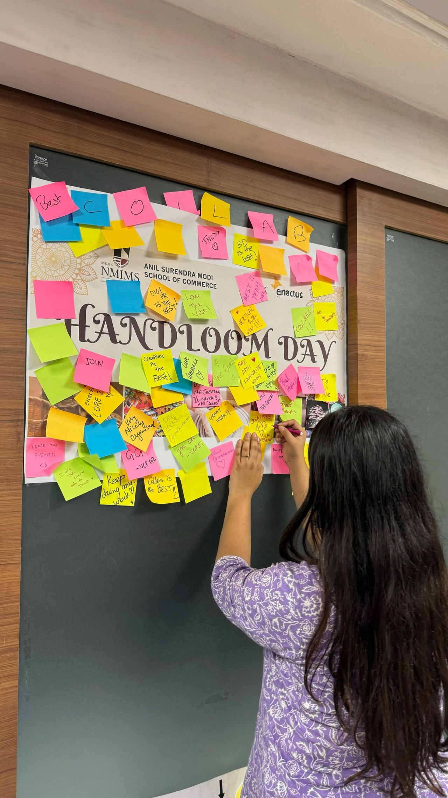

Projects
Enactus ASMSOC has been working on several impactful projects that aim to bring change to our community. Here's a brief overview:
Project AARANYA:

Turning waste into wonder
At Aaranya, we believe in sustainability with a splash of color!
Our initiative transforms discarded sawdust into eco-friendly Rangoli colors, handcrafted by Adapt NGO.
By supporting this project, you are not just buying colors - you are empowering young artisans and promoting sustainable Celebrations.
Project NEEV:

Sustainable fashion, a fast moving trend but something we have been working on for a very long time. Up-ing the standards day by day, have a closer look at it.
Club Events
We have some exciting evens undertaken by the team:
Jashn-e-Abhirva
A festival in collaboration with the ENACTUS team of MPSTME, first of its kind and waiting to get bigger, year after year.
Handloom Day

Celebreating the artisans, welcoming them to our college and sharing memories with the students.